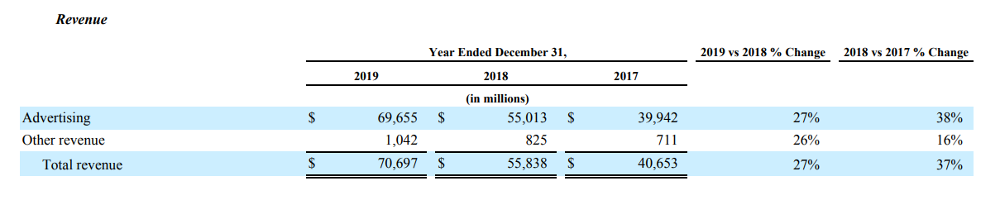

SNT : Réseaux sociaux : Exercice 5.4
SNT RS exercice 5.4
Liens :
Page 5
Page 6
Index
Exercice 5.3 : Identifier les sources de revenus d'un réseau social

L'image ci-dessus est un extrait d'un rapport de Facebook donnant les sources de revenus de ce réseau social pour les années 2017 ; 2018 et 2019.
Identifier les sources de revenus publicitaires et les autres sources de revenus.
Compléter le tableau du cours (
Exercice 5.4 de la feuille 4
).
Calculer les pourcentages d'évolution demandés et les retrouver dans l'extrait ci-dessus.
Vous pouvez télécharger la feuille 4
ici
.
Point 4 :
Lever la main pour que le professeur valide l'exercice et qu'il vérifie que le cours a été complété correctement.
Puis vous passerez à la page :
SNT_RS_page6
.